library(ggplot2)Cargar los datos en un dataframe llamado: airbnb
airbnb<-read.csv('data//airbnb.csv',sep = ',', stringsAsFactors = T)Mostrar las primeras 6 filas del dataframe
head(airbnb, 6) Zipcode Neighbourhood.Cleansed Property.Type Room.Type Accommodates
1 28004 Universidad Apartment Private room 2
2 28004 Universidad Apartment Entire home/apt 6
3 28004 Universidad Apartment Entire home/apt 3
4 28004 Universidad Loft Entire home/apt 3
5 28015 Universidad Apartment Entire home/apt 5
6 28004 Universidad Apartment Entire home/apt 2
Bathrooms Bedrooms Beds Bed.Type
1 2 1 1 Real Bed
2 1 3 5 Real Bed
3 1 2 2 Real Bed
4 2 1 1 Real Bed
5 1 1 1 Real Bed
6 1 0 1 Real Bed
Amenities
1 TV,Wireless Internet,Kitchen,Pets allowed,Pets live on this property,Buzzer/wireless intercom,Heating,Suitable for events,Washer,First aid kit,Essentials,Lock on bedroom door,Iron
2 TV,Internet,Wireless Internet,Air conditioning,Kitchen,Indoor fireplace,Heating,Family/kid friendly,Washer,Dryer,Smoke detector,Carbon monoxide detector,Essentials,Shampoo
3 TV,Internet,Wireless Internet,Air conditioning,Kitchen,Doorman,Heating,Family/kid friendly,Washer,Essentials,Shampoo,Hangers,Hair dryer,Iron,Laptop friendly workspace
4 TV,Internet,Wireless Internet,Air conditioning,Kitchen,Pets allowed,Breakfast,Elevator in building,Indoor fireplace,Buzzer/wireless intercom,Heating,Washer,Essentials,Shampoo,Hangers,Hair dryer,Iron,Laptop friendly workspace,translation missing: en.hosting_amenity_49,translation missing: en.hosting_amenity_50
5 TV,Wireless Internet,Air conditioning,Kitchen,Smoking allowed,Pets allowed,Elevator in building,Heating,Family/kid friendly,Washer,Essentials,Iron
6 TV,Cable TV,Internet,Wireless Internet,Air conditioning,Wheelchair accessible,Kitchen,Doorman,Elevator in building,Buzzer/wireless intercom,Heating,Washer,Smoke detector,Carbon monoxide detector,First aid kit,Safety card,Fire extinguisher,Essentials,Shampoo,24-hour check-in,Hangers,Hair dryer,Iron,Laptop friendly workspace,Self Check-In,Doorman Entry
Square.Feet Price Review.Scores.Rating
1 NA 35 NA
2 NA 92 96
3 NA 55 91
4 NA 60 100
5 538 75 90
6 NA 55 95Renombrar las columnas de la siguiente forma:
| Nombre original | Nuevo nombre |
|---|---|
| Zipcode | CodigoPostal |
| Neighbourhood.Cleansed | Barrio |
| Property.Type | TipoPropiedad |
| Room.Type | TipoAlquiler |
| Accommodates | MaxOcupantes |
| Bathrooms | NumBanyos |
| Bedrooms | NumDormitorios |
| Beds | NumCamas |
| Bed.Type | TipoCama |
| Amenities | Comodidades |
| Square.Feet | PiesCuadrados |
| Price | Precio |
| Review.Scores.Rating | Puntuacion |
# Renombrar las columnas de la siguiente forma:
newnames<-c("CodigoPostal","Barrio","TipoPropiedad","TipoAlquiler","MaxOcupantes","NumBanyos",
"NumDormitorios","NumCamas","TipoCama","Comodidades","PiesCuadrados","Precio","Puntuacion")
colnames(airbnb) <- newnamesCrea una nueva columna llamada MetrosCuadrados a partir de la columna PiesCuadrados.
Ayuda: 1 pie cuadrado son 0,092903 metros cuadrdados
airbnb$MetrosCuadrados <- airbnb$PiesCuadrados * 0.092903Miremos el código postal. Es una variable con entradas erroneas. Hay valores como ’‘,’-’ y ‘28’ que deberían ser considerados como NA. Así mismo también debería ser NA todos los que no compiencen por 28, ya que estamos con códigos postales de Madrid
airbnb$CodigoPostal <- as.character(airbnb$CodigoPostal)
airbnb$CodigoPostal <- ifelse(grepl(' ', airbnb$CodigoPostal) | grepl('-', airbnb$CodigoPostal) | substr(airbnb$CodigoPostal, 1, 2) != '28', NA, airbnb$CodigoPostal)El código postal 28002, 28004 y 28051 tienen entradas repetidas. Por ejemplo las entradas 28002 deberían ir dentro de 28002
airbnb$CodigoPostal <- gsub('28002.*', '28002', airbnb$CodigoPostal)
airbnb$CodigoPostal <- gsub('28004.*', '28004', airbnb$CodigoPostal)
airbnb$CodigoPostal <- gsub('28051.*', '28051', airbnb$CodigoPostal)
#subset(airbnb, grepl('^28002', CodigoPostal))El codigo 2804 debería ser 28004, 2805 deberia ser 28005 y 2815 junto con 2815 debería ser 28015
airbnb$CodigoPostal <- gsub('2804$', '28004', airbnb$CodigoPostal)
airbnb$CodigoPostal <- gsub('2805$', '28005', airbnb$CodigoPostal)
airbnb$CodigoPostal <- gsub('2815$', '28015', airbnb$CodigoPostal)
#subset(airbnb, grepl('2804$', CodigoPostal))Limpia los datos de la columna Codigo Postal
# Vemos que hay un CP que es '28'. Para terminar tras la limpieza hecha, vamos a dejar como NA aquellos CP que no contengan 5 caracteres:
airbnb$CodigoPostal <- ifelse(nchar(airbnb$CodigoPostal) != 5, NA, airbnb$CodigoPostal)Una vez limpios los datos ¿Cuales son los códigos postales que tenemos?
unique(airbnb$CodigoPostal) [1] "28004" "28015" "28013" "28005" "28012" "28014" "28045" NA "28007"
[10] "28028" "28009" "28001" "28006" "28010" "28002" "28034" "28050" "28008"
[19] "28011" "28049" "28038" "28053" "28047" "28025" "28019" "28024" "28016"
[28] "28036" "28046" "28039" "28020" "28003" "28029" "28054" "28041" "28026"
[37] "28058" "28018" "28030" "28017" "28027" "28043" "28033" "28055" "28021"
[46] "28032" "28037" "28022" "28042" "28094" "28035" "28040" "28031" "28044"
[55] "28105" "28023" "28051" "28850" "28048" "28056" "28060" "28052"¿Cuales son los 5 códigos postales con más entradas? ¿Y con menos? ¿Cuantas entradas tienen?
frecuencias <- table(airbnb$CodigoPostal)
top5 <- head(sort(frecuencias, decreasing = TRUE), 5)
anti_top5 <- head(sort(frecuencias), 5)
top5_anti_top5 <- data.frame(codigo_postal = c(names(top5), names(anti_top5)),
frecuencia = c(top5, anti_top5), row.names = NULL) # Me repetía los códigos postales como rowname, asíque le pongo NULL para que los elimine
head(top5_anti_top5, 10) codigo_postal frecuencia
1 28012 2060
2 28004 1795
3 28005 1195
4 28013 1019
5 28014 630
6 28048 1
7 28052 1
8 28056 1
9 28058 1
10 28060 1¿Cuales son los barrios que hay en el código postal 28012?
paste(unique(airbnb$Barrio[which(airbnb$CodigoPostal == '28012')]), collapse = ", ")[1] "Sol, Acacias, Palos de Moguer, Embajadores, Cortes, Palacio, Universidad, Delicias, Arapiles, Atocha, Goya"¿Cuantas entradas hay en cada uno de esos barrios para el codigo postal 28012?
subset(as.data.frame(table(airbnb$Barrio[which(airbnb$CodigoPostal == '28012')])), Freq >0) Var1 Freq
2 Acacias 13
14 Arapiles 1
18 Atocha 1
41 Cortes 216
45 Delicias 1
49 Embajadores 1449
56 Goya 1
81 Palacio 27
85 Palos de Moguer 46
112 Sol 301
115 Universidad 4¿Cuantos barrios hay en todo el dataset airbnb? ¿Cuales son?
num_barrios <- length(unique(airbnb$Barrio))
print(paste("Hay",num_barrios, "barrios diferentes. Son estos:"))[1] "Hay 125 barrios diferentes. Son estos:"unique(airbnb$Barrio) [1] Universidad Sol
[3] Imperial Acacias
[5] Chopera Delicias
[7] Palos de Moguer Embajadores
[9] Cortes Atocha
[11] Pacífico Adelfas
[13] Estrella Ibiza
[15] Jerónimos Niño Jesús
[17] Palacio Justicia
[19] Recoletos Goya
[21] Fuente del Berro Arapiles
[23] Trafalgar Almagro
[25] Guindalera Lista
[27] Castellana El Viso
[29] Prosperidad Valverde
[31] Casa de Campo El Goloso
[33] Numancia Cármenes
[35] Puerta del Angel Lucero
[37] Aluche San Isidro
[39] Campamento Comillas
[41] Opañel Vista Alegre
[43] Ciudad Jardín Hispanoamérica
[45] Nueva España Castilla
[47] Bellas Vistas Cuatro Caminos
[49] Castillejos Vallehermoso
[51] Almenara Valdeacederas
[53] Berruguete Gaztambide
[55] Rios Rosas Peñagrande
[57] Argüelles Puerta Bonita
[59] Buenavista Abrantes
[61] Orcasur San Fermín
[63] Almendrales Pradolongo
[65] Portazgo Entrevías
[67] San Diego Palomeras Bajas
[69] Fontarrón Vinateros
[71] Ventas Pueblo Nuevo
[73] Quintana Concepción
[75] San Juan Bautista Costillares
[77] Piovera Canillas
[79] Pinar del Rey Apostol Santiago
[81] San Andrés Valdefuentes
[83] Butarque Los Angeles
[85] Casco Histórico de Vicálvaro Simancas
[87] Rejas Salvador
[89] Casco Histórico de Barajas Pilar
[91] La Paz Mirasierra
[93] Ciudad Universitaria Moscardó
[95] Palomeras Sureste Marroquina
[97] Media Legua Los Rosales
[99] Casco Histórico de Vallecas Timón
[101] Corralejos Cuatro Vientos
[103] Colina San Cristobal
[105] Alameda de Osuna Aeropuerto
[107] Palomas Zofío
[109] Aguilas Legazpi
[111] Fuentelareina Aravaca
[113] Ambroz Canillejas
[115] Valdezarza Amposta
[117] San Pascual Santa Eugenia
[119] Arcos Rosas
[121] Valdemarín El Plantío
[123] Hellín Pavones
[125] Orcasitas
125 Levels: Abrantes Acacias Adelfas Aeropuerto Aguilas ... Zofío¿Cuales son los 5 barrios que tienen mayor número entradas?
frecuencia_barrios <- table(airbnb$Barrio)
top5_barrios <- head(sort(frecuencia_barrios, decreasing = TRUE), 5)
top5_barrios
Embajadores Universidad Palacio Sol Justicia
1844 1358 1083 940 785 ¿Cuantos Tipos de Alquiler diferentes hay? ¿Cuales son? ¿Cuantas entradas en el dataframe hay por cada tipo?
print(paste("Existen", unique(length(unique(airbnb$TipoAlquiler))), "tipos de alquiler diferentes, son estos:"))[1] "Existen 3 tipos de alquiler diferentes, son estos:"unique(airbnb$TipoAlquiler)[1] Private room Entire home/apt Shared room
Levels: Entire home/apt Private room Shared roomdf_tipo_alquiler <- data.frame(TipoAlquiler = names(table(airbnb$TipoAlquiler)),
Frecuencia = as.vector(table(airbnb$TipoAlquiler)))
df_tipo_alquiler TipoAlquiler Frecuencia
1 Entire home/apt 7903
2 Private room 5113
3 Shared room 191Muestra el diagrama de cajas del precio para cada uno de los diferentes Tipos de Alquiler
library("ggplot2")
library("tidyr")
ggplot(data=drop_na(airbnb,Precio),aes(x=TipoAlquiler, y=Precio ,color=TipoAlquiler))+ # Uso drop_na en la llamada al dataframe para evitar el warning de valores infinitos
geom_boxplot() +
labs(title = "Precios por tipo de alquiler")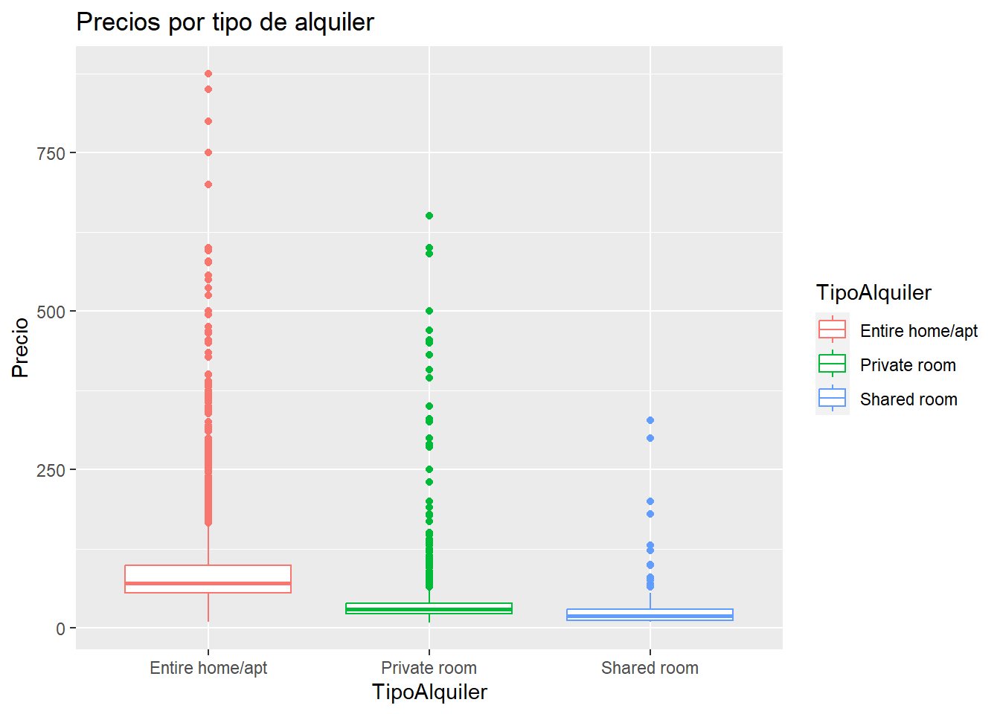
#Este punto todavía no se puede hacer!!!!!! Cual es el precio medio de alquiler de cada uno, la diferencia que hay ¿es estadísticamente significativa? ¿Con que test lo comprobarías?
mean_prices_TipoAlquiler <- aggregate(Precio ~ TipoAlquiler, data = airbnb, FUN = mean)
mean_prices_TipoAlquiler TipoAlquiler Precio
1 Entire home/apt 87.29661
2 Private room 34.25514
3 Shared room 29.85340# Para comprobar si la diferencia es estadísticamente significativa, en primer lugar aplicaremos el test de Saphiro para saber si los valores de cada grupo siguen una distribución gaussiana
precios <- as.numeric(airbnb$Precio)
tipo_alquiler <- airbnb$TipoAlquiler
precios_entire <- precios[tipo_alquiler == "Entire home/apt"]
precios_private <- precios[tipo_alquiler == "Private room"]
precios_shared <- precios[tipo_alquiler == "Shared room"]
shapiro.test(head(precios_entire, 5000))
Shapiro-Wilk normality test
data: head(precios_entire, 5000)
W = 0.64959, p-value < 2.2e-16shapiro.test(head(precios_private, 5000))
Shapiro-Wilk normality test
data: head(precios_private, 5000)
W = 0.38267, p-value < 2.2e-16shapiro.test(head(precios_shared, 5000))
Shapiro-Wilk normality test
data: head(precios_shared, 5000)
W = 0.4436, p-value < 2.2e-16# Para realizar el test de Saphiro, tomamos como hipótesis nula que los datos tienen una distribución normal o gaussiana. La hipótesis alternativa será en este caso que no poseen una distribución normal
# Si p-value < 0.05 podremos descartar la hipótesis nula y abrazar la hipótesis alternativa. Como p-value < 2.2e-16 en los tres grupos, descartamos la hipótesis nula y aceptamos que NO se trata de una distribución gaussiana. Ahora, aplicaremos el test ANOVA para comparar los tres grupos:# Aplicaremos el test Kruskal-Wallis para cualquier distribución, ya que vimos que los datos no formaban una distribución gaussiana al aplicar el test Saphiro.
# La hipótesis nula será que no hay diferencia estadísticamente significativa. Esto se cumplirá si p-value > 0.05
# La hipótesis alternativa será que sí hay diferencia estadísticamente significativa, que los tres grupos son diferentes.
kruskal.test(Precio ~ TipoAlquiler, airbnb)
Kruskal-Wallis rank sum test
data: Precio by TipoAlquiler
Kruskal-Wallis chi-squared = 7235.6, df = 2, p-value < 2.2e-16# El resultado nos dice que p-valor <2e-16, mucho menor a 0.05, con lo que descartamos la hipótesis nula y abrazamos la alternativa, por lo que SÍ hay diferencia estadísticamente significativa.Filtra el dataframe cuyos tipo de alquiler sea ‘Entire home/apt’ y guardalo en un dataframe llamado airbnb_entire. Estas serán las entradas que tienen un alquiler del piso completo.
airbnb_entire <- airbnb[which(airbnb$TipoAlquiler == 'Entire home/apt'),]¿Cuales son los 5 barrios que tienen un mayor número de apartamentos enteros en alquiler? Nota: Mirar solo en airbnb_entire. A partir de este punto y hasta que se diga lo contrario partiremos de airbnb_entire.
head(sort(table(airbnb_entire$Barrio), decreasing = TRUE), 5)
Embajadores Universidad Palacio Sol Cortes
1228 984 769 701 574 ¿Cuales son los 5 barrios que tienen un mayor precio medio de alquiler para apartamentos enteros (es decir, del dataframe airbnb_entire)? ¿Cual es su precio medio? Ayuda: Usa la función aggregate aggregate(.~colname,df,mean,na.rm=TRUE)
media_barrio <- aggregate(Precio ~ Barrio, data = airbnb_entire, FUN = mean)
head(media_barrio[order(media_barrio$Precio, decreasing = TRUE), ], 5) Barrio Precio
77 Palomas 309.7500
50 Fuentelareina 180.0000
93 Recoletos 161.9254
43 El Plantío 150.0000
30 Castellana 141.3889¿Cuantos apartamentos hay en cada uno de esos barrios? Mostrar un dataframe con el nombre del barrio, el precio y el número de entradas.
Ayuda: Podeis crear un nuevo dataframe con las columnas “Barrio” y “Freq” que contenga el número de entradas en cada barrio y hacer un merge con el dataframe del punto anterior.
cuenta_barrio <- as.data.frame(table(airbnb_entire$Barrio)) # Cuento la cantidad de apariciones de cada barrio en el dataframe
names(cuenta_barrio) <- c("Barrio", "N_apartamentos")
apartamentos_barrio <- merge(media_barrio, cuenta_barrio, by = "Barrio") #Combino la cantidad de apariciones por barrio con media_barrio (precio medio por barrio) que he calculado antes
top5 <- head(apartamentos_barrio[order(apartamentos_barrio$Precio, decreasing = TRUE),], 5) # Muestro los 5 de mayor precio medio de alquiler y su cantidad de apartamentos
top5 Barrio Precio N_apartamentos
77 Palomas 309.7500 4
50 Fuentelareina 180.0000 2
93 Recoletos 161.9254 135
43 El Plantío 150.0000 1
30 Castellana 141.3889 73Partiendo del dataframe anterior, muestra los 5 barrios con mayor precio, pero que tengan más de 100 entradas de alquiler.
library(dplyr)
Attaching package: 'dplyr'The following objects are masked from 'package:stats':
filter, lagThe following objects are masked from 'package:base':
intersect, setdiff, setequal, unionsignificativos_precio <- head(apartamentos_barrio[apartamentos_barrio$N_apartamentos >100, ] |> arrange(desc(Precio)), 5)
significativos_precio Barrio Precio N_apartamentos
1 Recoletos 161.92537 135
2 Goya 111.33803 142
3 Sol 100.75036 701
4 Trafalgar 98.57848 223
5 Justicia 98.25468 534Dibuja el diagrama de densidad de distribución de los diferentes precios. Serían 5 gráficas, una por cada barrio.
airbnb_entire_top5 <- airbnb_entire |> filter(Barrio %in% c("Recoletos", "Goya", "Sol", "Trafalgar", "Justicia"))
ggplot(data = drop_na(airbnb_entire_top5, Precio), aes(x = Precio, fill = Barrio)) +
geom_density() +
facet_wrap(~Barrio, nrow = 3) + # podríamos utilizar , scales = "free" para que cada diagrama tenga su escala propia, pero en este caso podría ser más conveniente una común
labs(x = "Precio", y = "Densidad", fill = "Barrio") +
theme_dark() # Cacharreando un poco con los temas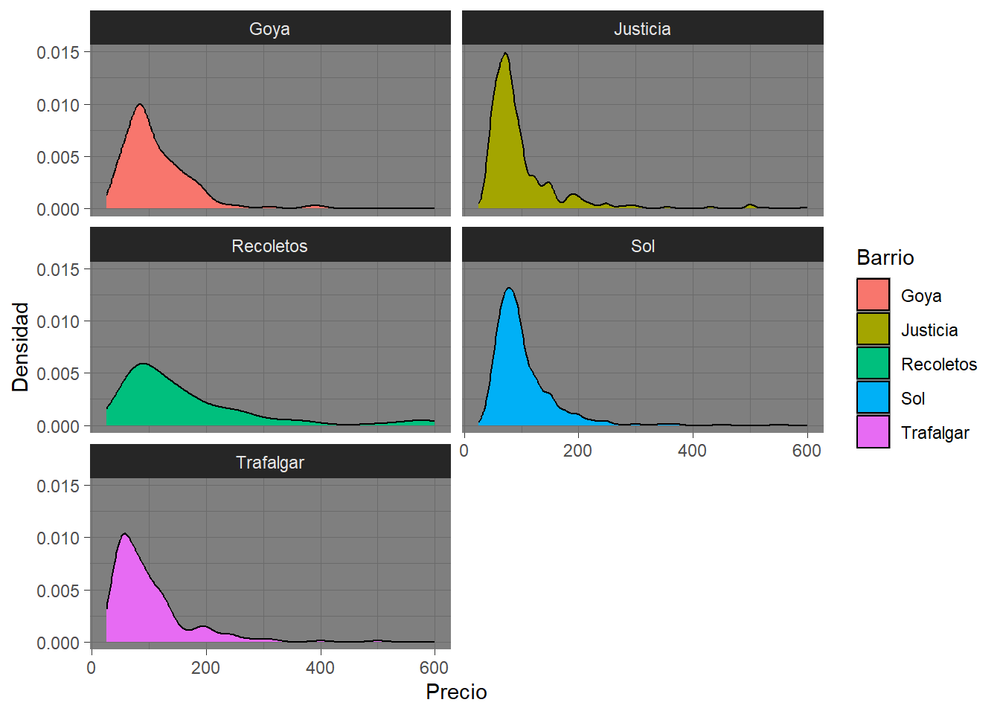
# Vemos como los precios por lo general se agrupan en el rango por debajo de 200 euros, aunque por ejemplo en Recoletos la cola es mucho mayor hacia la derecha Calcula el tamaño medio, en metros cuadrados, para los 5 barrios anteriores y muestralo en el mismo dataframe junto con el precio y número de entradas
library(dplyr)
media_tamano <- aggregate(MetrosCuadrados ~Barrio, data = airbnb_entire[airbnb_entire$Barrio %in% significativos_precio$Barrio,], FUN = mean)
top5_media_tamano <- merge(significativos_precio, media_tamano, by = "Barrio")
top5_media_tamano Barrio Precio N_apartamentos MetrosCuadrados
1 Goya 111.33803 142 51.68504
2 Justicia 98.25468 534 28.52669
3 Recoletos 161.92537 135 26.66316
4 Sol 100.75036 701 45.61692
5 Trafalgar 98.57848 223 29.30426Dibuja el diagrama de densidad de distribución de los diferentes tamaños de apartamentos. Serían 5 gráficas, una por cada barrio.
# Mismo plot que antes pero para los metros cuadrados
ggplot(data = drop_na(airbnb_entire_top5, Precio), aes(x = MetrosCuadrados, fill = Barrio)) +
geom_density() +
facet_wrap(~Barrio, nrow = 3, scales = "free") +
labs(x = "Metros cuadrados", y = "Densidad", fill = "Barrio") +
theme_dark() Warning: Removed 1644 rows containing non-finite values (`stat_density()`).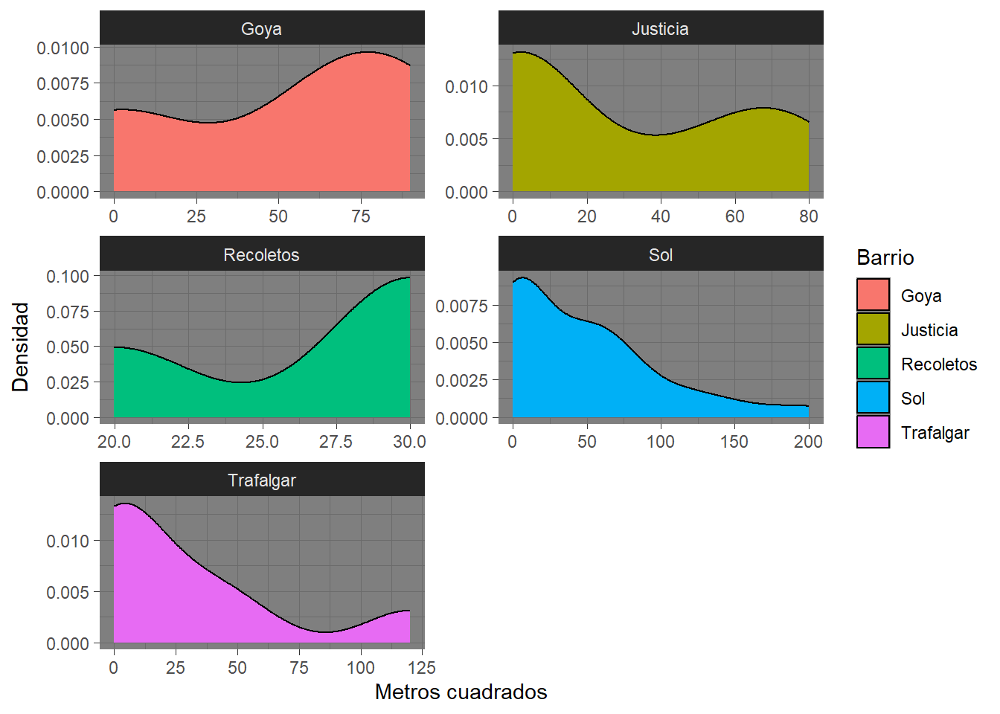
# En esta ocasión decidimos usar el parámetro scales con valor free, para que cada diagrama utilice su propia escala, ya que en caso de usar fixed, los datos mostrados no
# permitían una observación detallada. De este modo podemos ver como por ejemplo en el barrio de Recoletos los apartamentos son muy pequeños en relación con otros barrios
# donde existen apartamentos con mayores espacios, como Sol. O ver distribuciones más homogeneas como en el caso de Goya o incluso JusticiaEsta claro que las medias de metros cuadrados de cada uno de estos 5 barrios parecen ser diferentes, pero ¿son estadísticamente diferentes? ¿Que test habría que usar para comprobarlo?
# Primero comprobaremos con un test de Saphiro si los cinco grupos siguen una distribución gaussiana:
# Para comprobar si la diferencia en las medias de los precios de estos barrios es estadísticamente significativa, en primer lugar aplicaremos el test de Saphiro para saber si los valores de cada grupo siguen una distribución gaussiana
metrosCuadrados_Goya <- airbnb_entire_top5$MetrosCuadrados[airbnb_entire_top5$Barrio == "Goya"]
metrosCuadrados_Justicia <- airbnb_entire_top5$MetrosCuadrados[airbnb_entire_top5$Barrio == "Justicia"]
metrosCuadrados_Recoletos <- airbnb_entire_top5$MetrosCuadrados[airbnb_entire_top5$Barrio == "Recoletos"]
metrosCuadrados_Sol <- airbnb_entire_top5$MetrosCuadrados[airbnb_entire_top5$Barrio == "Sol"]
metrosCuadrados_Trafalgar <- airbnb_entire_top5$MetrosCuadrados[airbnb_entire_top5$Barrio == "Trafalgar"]
shapiro.test(metrosCuadrados_Goya)
Shapiro-Wilk normality test
data: metrosCuadrados_Goya
W = 0.93813, p-value = 0.5199shapiro.test(metrosCuadrados_Justicia)
Shapiro-Wilk normality test
data: metrosCuadrados_Justicia
W = 0.76212, p-value = 0.0006419shapiro.test(metrosCuadrados_Recoletos)
Shapiro-Wilk normality test
data: metrosCuadrados_Recoletos
W = 0.75, p-value < 2.2e-16shapiro.test(metrosCuadrados_Sol)
Shapiro-Wilk normality test
data: metrosCuadrados_Sol
W = 0.83089, p-value = 8.691e-07shapiro.test(metrosCuadrados_Trafalgar)
Shapiro-Wilk normality test
data: metrosCuadrados_Trafalgar
W = 0.75023, p-value = 0.01276# Excepto en el caso de Goya, en todos los demás el p-valor es muy pequeño, lo que significa que podemos descartar la hipótesis nula y afirmar que NO se trata de una distribución normal en todos los casos.# Aplicaremos el test de Kruskal para comprobar si hay diferencia estadística significativa. La hipótesis nula será que no hay diferencias significativas, mientras que la hipótesis alternativa será que sí las hay
kruskal.test(MetrosCuadrados ~ Barrio, airbnb_entire_top5)
Kruskal-Wallis rank sum test
data: MetrosCuadrados by Barrio
Kruskal-Wallis chi-squared = 1.882, df = 4, p-value = 0.7574# Según el test de Kruskal-Wallis, NO hay diferencia estadística significativa entre los diferentes barrios ya que p-value = 0.7574Para únicamente los pisos de alquiler en el barrio de Sol:
barrio_sol<-subset(airbnb_entire,Barrio=="Sol")Calcular un modelo lineal que combine alguna de estas variables: * NumBanyos * NumDormitorios * MaxOcupantes * MetrosCuadrados
Primero calculamos la correlación para ver como se relacionan estas variables entre sí.
#Para calcular la matriz de correlación, en primer lugar comprobaremos si las variables siguen o no una distribución normal. De ello dependerá el método (Pearson o Spearman) que utilizaremos
shapiro.test(barrio_sol$NumBanyos)
Shapiro-Wilk normality test
data: barrio_sol$NumBanyos
W = 0.54147, p-value < 2.2e-16shapiro.test(barrio_sol$NumDormitorios)
Shapiro-Wilk normality test
data: barrio_sol$NumDormitorios
W = 0.82593, p-value < 2.2e-16shapiro.test(barrio_sol$MaxOcupantes)
Shapiro-Wilk normality test
data: barrio_sol$MaxOcupantes
W = 0.83282, p-value < 2.2e-16shapiro.test(barrio_sol$MetrosCuadrados)
Shapiro-Wilk normality test
data: barrio_sol$MetrosCuadrados
W = 0.83089, p-value = 8.691e-07#Según Saphiro, los datos no siguen una distribución gaussiana, por lo que aplicaremos la función de correlación con el método de Spearmanbarrio_sol_model <- data.frame(barrio_sol$NumBanyos, barrio_sol$NumDormitorios, barrio_sol$MaxOcupantes, barrio_sol$MetrosCuadrados)
cor(barrio_sol_model, method = "spearman",use="pairwise.complete.obs") barrio_sol.NumBanyos barrio_sol.NumDormitorios
barrio_sol.NumBanyos 1.0000000 0.6340408
barrio_sol.NumDormitorios 0.6340408 1.0000000
barrio_sol.MaxOcupantes 0.6007382 0.7519491
barrio_sol.MetrosCuadrados 0.3441343 0.3519002
barrio_sol.MaxOcupantes barrio_sol.MetrosCuadrados
barrio_sol.NumBanyos 0.6007382 0.3441343
barrio_sol.NumDormitorios 0.7519491 0.3519002
barrio_sol.MaxOcupantes 1.0000000 0.3538099
barrio_sol.MetrosCuadrados 0.3538099 1.0000000Se observa que la correlación entre el número de dormitorios y los metros cuadrados es sorprendentemente baja. ¿Son de fiar esos números?
# Se debe tener en cuenta que la correlación no implica causalidad y que habría que ver otros análisis para sacar conclusiones a esa correlación más baja. tal vez podría tener sentido en tanto a que pisos más caros tienen espacios más grandes, y no por ello más habitaciones, o, por el contrario, que las personas que ponen casas en alquiler en airbnb intentan tener el mayor número de habitaciones posible aunque sean pequeñas, por lo que al aumentar el número de habitaciones, no necesariamente aumentaría tanto el de metros cuadrados, pero haría falta otro tipo de análisis para esclarecer esto.Mediante un histograma o curvas de densidad podemos descartar números que notienen sentido en el dataframe barrio_sol, para tener una matriz de correlación que tenga mayor sentido.
ggplot(data = barrio_sol, aes(x = NumBanyos)) +
geom_density(color = "blue") +
labs(x = "Num Baños", y = "Densidad", title = "Número baños")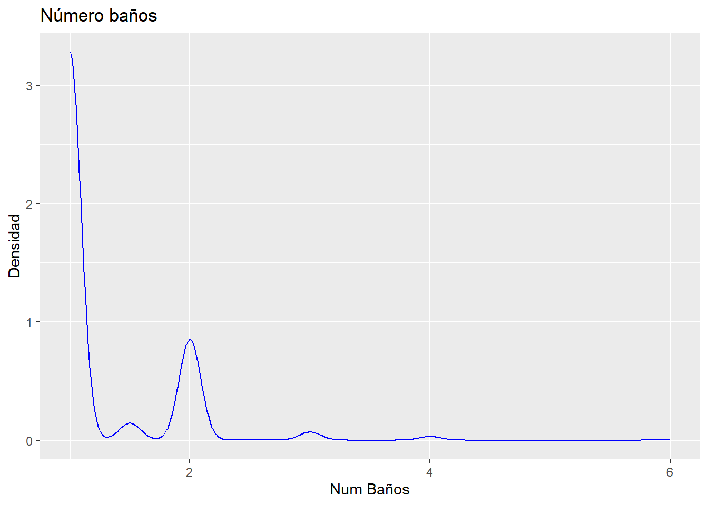
ggplot(data = barrio_sol, aes(x = NumDormitorios)) +
geom_density(color = "red") +
labs(x = "Num Dormitorios", y = "Densidad", title = "Número dormitorios")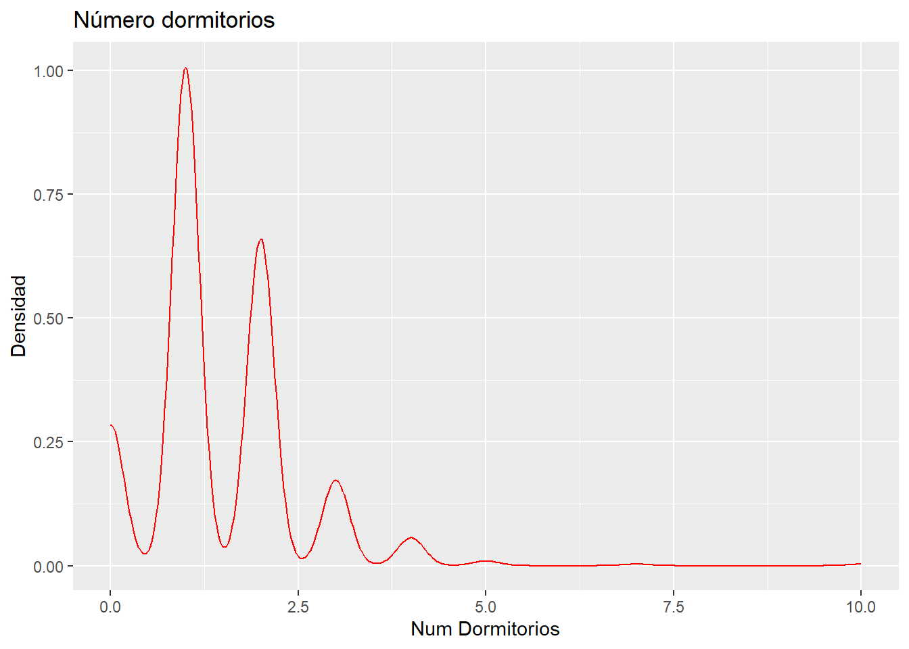
ggplot(data = barrio_sol, aes(x = MaxOcupantes)) +
geom_density(color = "yellow") +
labs(x = "Max Ocupantes", y = "Densidad", title = "Número ocupantes máximo")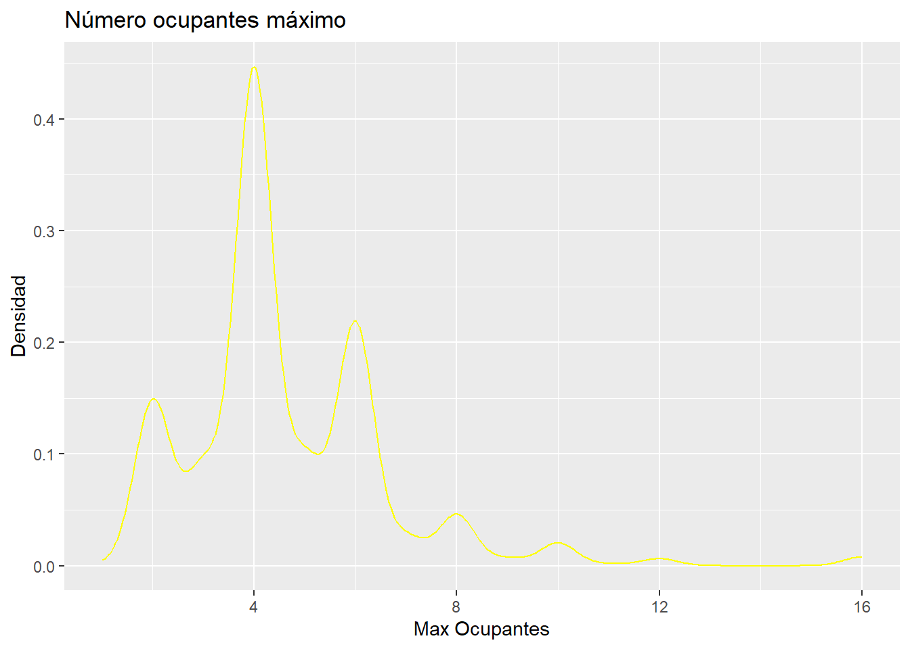
ggplot(data = barrio_sol, aes(x = MetrosCuadrados)) +
geom_density(color = "green") +
labs(x = "Metros cuadrados", y = "Densidad", title = "Metros cuadrados")Warning: Removed 641 rows containing non-finite values (`stat_density()`).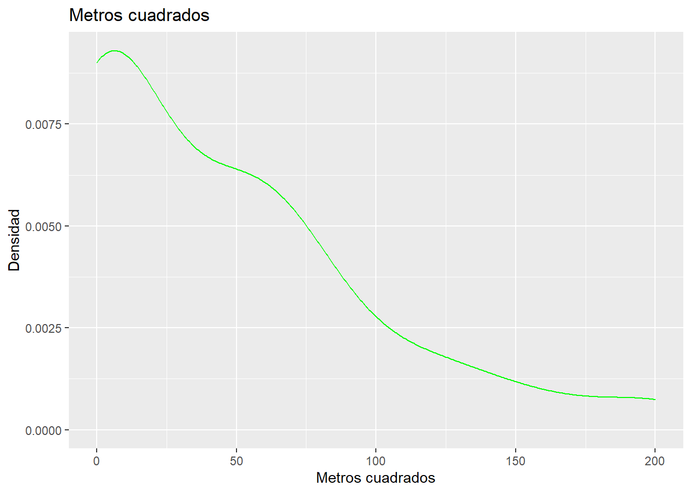
ggplot(data = barrio_sol, aes(x = NumBanyos)) +
geom_histogram(fill = "blue") +
labs(x = "Num Baños", y = "Densidad", title = "Número baños")`stat_bin()` using `bins = 30`. Pick better value with `binwidth`.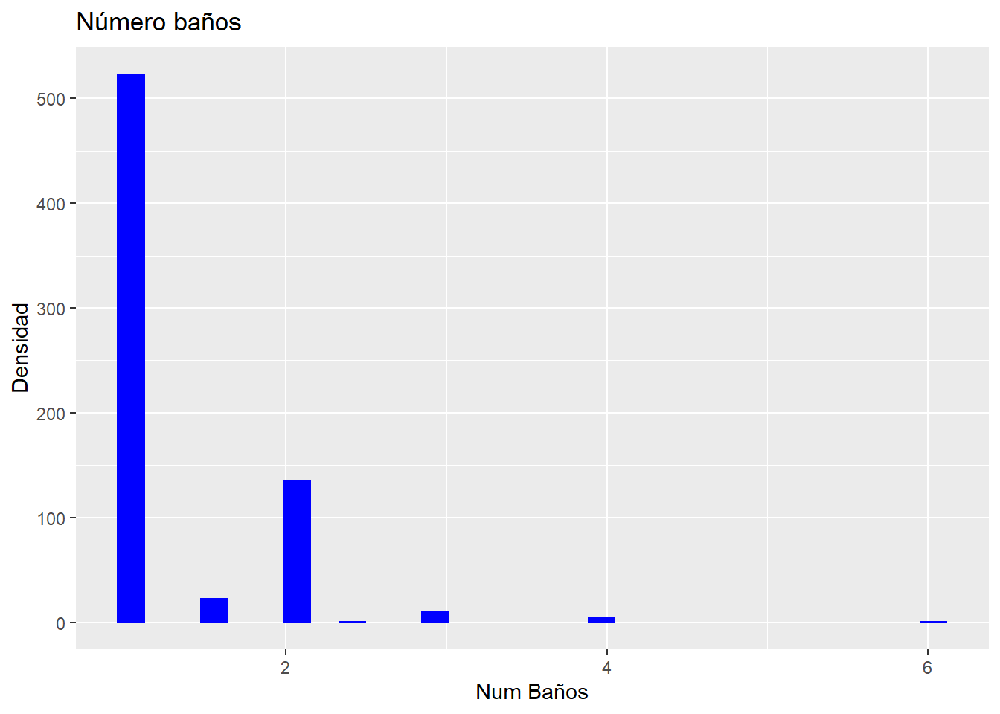
ggplot(data = barrio_sol, aes(x = NumDormitorios)) +
geom_histogram(fill = "red") +
labs(x = "Num Dormitorios", y = "Densidad", title = "Número dormitorios")`stat_bin()` using `bins = 30`. Pick better value with `binwidth`.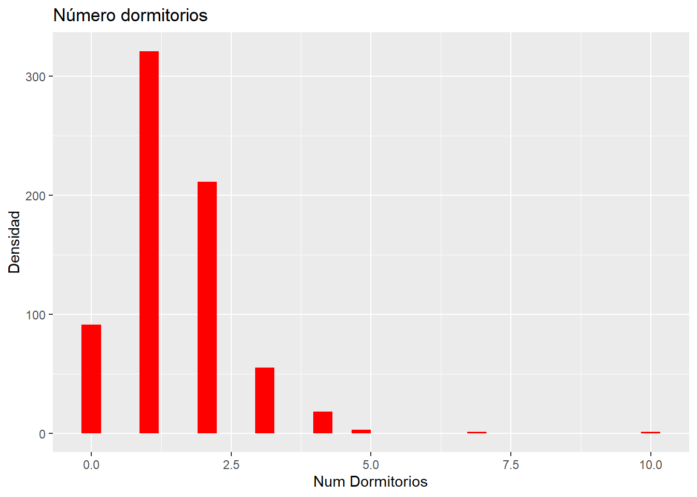
ggplot(data = barrio_sol, aes(x = MaxOcupantes)) +
geom_histogram(fill = "yellow") +
labs(x = "Max Ocupantes", y = "Densidad", title = "Número ocupantes máximo")`stat_bin()` using `bins = 30`. Pick better value with `binwidth`.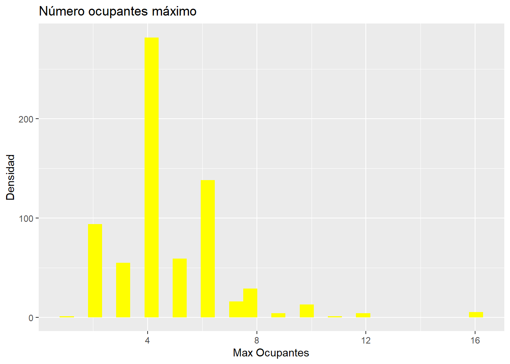
ggplot(data = barrio_sol, aes(x = MetrosCuadrados)) +
geom_histogram(fill = "green") +
labs(x = "Metros cuadrados", y = "Densidad", title = "Metros cuadrados")`stat_bin()` using `bins = 30`. Pick better value with `binwidth`.Warning: Removed 641 rows containing non-finite values (`stat_bin()`).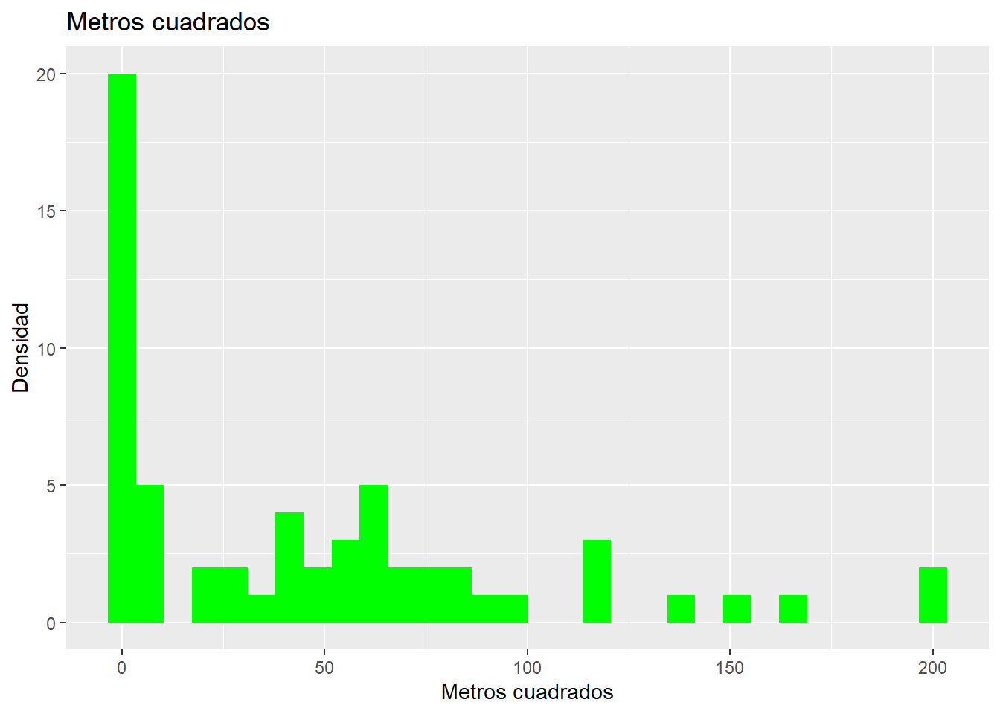
# Dadas las curvas de densidad e histogramas, podríamos descartar algunos valores extremos, como todos aquellos con más de 4 baños, más de 5 dormitorios o más de 12 ocupantes.Una vez que hayamos filtrado los datos correspondientes calcular el valor o la combinación de valores que mejor nos permite obtener el precio de un inmueble.
# Haremos el filtro según lo estimado en el anterior punto:
barrio_sol_filtrado <- barrio_sol[barrio_sol$NumBanyos <= 4 & barrio_sol$NumDormitorios <= 5 & barrio_sol$MaxOcupantes <= 12, ]
#barrio_sol_filtradolibrary(GGally)Registered S3 method overwritten by 'GGally':
method from
+.gg ggplot2options(repr.plot.height=4,repr.plot.width=6)
ggpairs(barrio_sol_filtrado[,c("NumBanyos","NumDormitorios","MaxOcupantes","MetrosCuadrados", "NumCamas", "Puntuacion", "Precio")],
#lower = list(continuous = wrap("density", alpha = 0.8,size=0.2,color='blue'))
lower = list(continuous = wrap("points", alpha = 0.3,size=0.1,color='blue'))
)Warning in ggally_statistic(data = data, mapping = mapping, na.rm = na.rm, :
Removed 637 rows containing missing valuesWarning in ggally_statistic(data = data, mapping = mapping, na.rm = na.rm, :
Removed 69 rows containing missing valuesWarning in ggally_statistic(data = data, mapping = mapping, na.rm = na.rm, :
Removed 637 rows containing missing valuesWarning in ggally_statistic(data = data, mapping = mapping, na.rm = na.rm, :
Removed 69 rows containing missing valuesWarning in ggally_statistic(data = data, mapping = mapping, na.rm = na.rm, :
Removed 637 rows containing missing valuesWarning in ggally_statistic(data = data, mapping = mapping, na.rm = na.rm, :
Removed 69 rows containing missing valuesWarning: Removed 637 rows containing missing values (`geom_point()`).
Removed 637 rows containing missing values (`geom_point()`).
Removed 637 rows containing missing values (`geom_point()`).Warning: Removed 637 rows containing non-finite values (`stat_density()`).Warning in ggally_statistic(data = data, mapping = mapping, na.rm = na.rm, :
Removed 637 rows containing missing values
Warning in ggally_statistic(data = data, mapping = mapping, na.rm = na.rm, :
Removed 637 rows containing missing values
Warning in ggally_statistic(data = data, mapping = mapping, na.rm = na.rm, :
Removed 637 rows containing missing valuesWarning: Removed 637 rows containing missing values (`geom_point()`).Warning in ggally_statistic(data = data, mapping = mapping, na.rm = na.rm, :
Removed 69 rows containing missing valuesWarning: Removed 69 rows containing missing values (`geom_point()`).
Removed 69 rows containing missing values (`geom_point()`).
Removed 69 rows containing missing values (`geom_point()`).Warning: Removed 637 rows containing missing values (`geom_point()`).Warning: Removed 69 rows containing missing values (`geom_point()`).Warning: Removed 69 rows containing non-finite values (`stat_density()`).Warning in ggally_statistic(data = data, mapping = mapping, na.rm = na.rm, :
Removed 69 rows containing missing valuesWarning: Removed 637 rows containing missing values (`geom_point()`).Warning: Removed 69 rows containing missing values (`geom_point()`).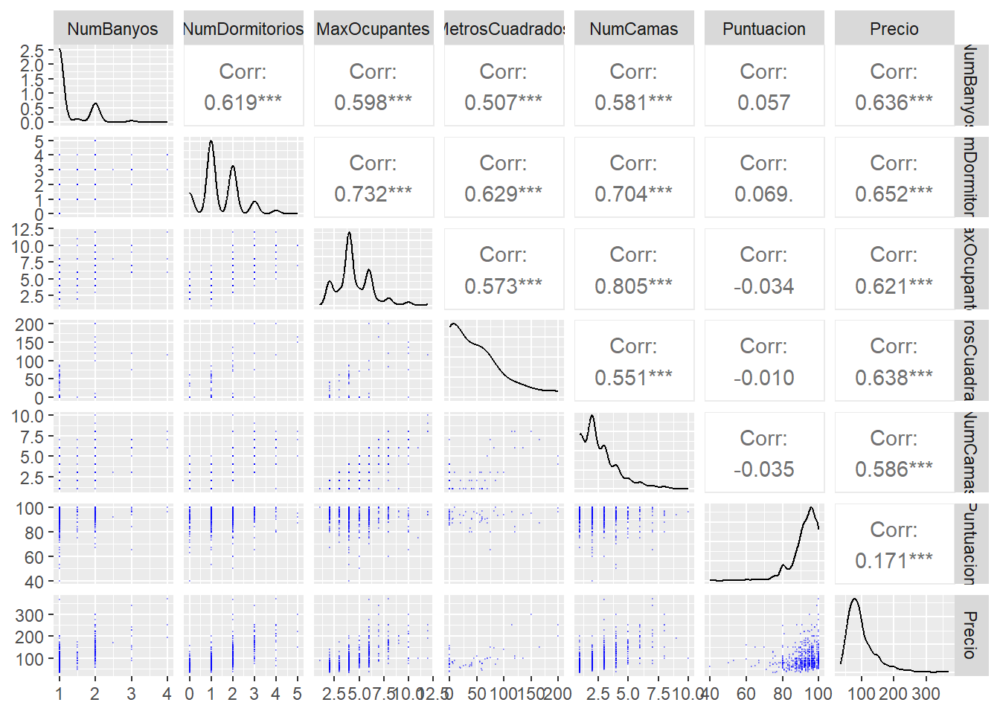
# Hemos incluido para obtener esta matriz de correlación algún otro valor como Número de camas y Puntuación. La mayor correlación con el precio se produce no obstante entre las cuatro variables que estabamos estudiando arriba (Número de baños, Número de dormitorios, Máximo de ocupantes y Metros cuadrados. También vemos que la puntuación tiene baja correlación, lo cual puede ser sorprendente)# Nos quedaremos con las cuatro variables con mayor correlación
model<-lm(data=barrio_sol_filtrado, formula = Precio ~ NumBanyos+NumDormitorios+MaxOcupantes+MetrosCuadrados)
summary(model)
Call:
lm(formula = Precio ~ NumBanyos + NumDormitorios + MaxOcupantes +
MetrosCuadrados, data = barrio_sol_filtrado)
Residuals:
Min 1Q Median 3Q Max
-69.773 -14.530 -3.525 9.779 105.464
Coefficients:
Estimate Std. Error t value Pr(>|t|)
(Intercept) 38.04915 10.41213 3.654 0.000584 ***
NumBanyos 11.14731 10.36721 1.075 0.287045
NumDormitorios 22.58510 6.45622 3.498 0.000946 ***
MaxOcupantes 0.08493 3.11096 0.027 0.978320
MetrosCuadrados 0.23892 0.10482 2.279 0.026624 *
---
Signif. codes: 0 '***' 0.001 '**' 0.01 '*' 0.05 '.' 0.1 ' ' 1
Residual standard error: 31.91 on 54 degrees of freedom
(637 observations deleted due to missingness)
Multiple R-squared: 0.629, Adjusted R-squared: 0.6015
F-statistic: 22.89 on 4 and 54 DF, p-value: 4.242e-11¿Que variable es más fiable para conocer el precio de un inmueble, el número de habitaciones o los metros cuadrados?
# El NÚMERO DE HABITACIONES parece ser el más influyente según su p-valor en el modelo y por tanto el más fiable, los metros cuadrados parecen tener una relación mucho menor (NumDormitorios tiene 3 estrellas, MetrosCuadrados una)Responde con su correspondiente margen de error del 95%, ¿cuantos euros incrementa el precio del alquiler por cada metro cuadrado extra del piso?
confint(lm(Precio ~ MetrosCuadrados, barrio_sol_filtrado), level = 0.95) 2.5 % 97.5 %
(Intercept) 55.5127981 82.9961941
MetrosCuadrados 0.4191837 0.8142655# Con un intervalo de confianza del 95% podemos decir que por cada metro cuadrado extra, el valor del alquiler se incrementa entre 0.4191837 y 0.8142655 eurosResponde con su correspondiente margen de error del 95%, ¿cuantos euros incrementa el precio del alquiler por cada habitación?
confint(lm(Precio ~ NumDormitorios, barrio_sol_filtrado), level = 0.95) 2.5 % 97.5 %
(Intercept) 48.58829 58.0721
NumDormitorios 29.63486 35.2648# Con un intervalo de confianza del 95% podemos decir que por cada habitación extra, el precio del alquiler se incrementa entre 29.63486 y 35.2648 euros, lo que confirma que el número de habitaciones es mucho más iportante en el precio que el de metros cuadrados¿Cual es la probabilidad de encontrar, en el barrio de Sol, un apartamento en alquiler con 3 dormitorios? ¿Cual es el intervalo de confianza de esa probabilidad? (ver el numero de exitos (apartamentos en alquiler con tres dormitorios), respecto del total de apartamentos)
#sum(barrio_sol[which(barrio_sol$NumDormitorios == 3)])
num_3Dormitorios <- sum(barrio_sol$NumDormitorios == 3)
total_Disponibles <- sum(barrio_sol$NumDormitorios)
prob_3 <- num_3Dormitorios/total_Disponibles
print(paste("La probabilidad de encontrar en Sol un apartamento con tres dormitorios es: ", prob_3))[1] "La probabilidad de encontrar en Sol un apartamento con tres dormitorios es: 0.0543478260869565"# Para calcular el intervalo de confianza de esta probabilidad, utilizaremos un test BINOMIAL (binom.test)
library(binom)
r1 <- round(binom.test(num_3Dormitorios, total_Disponibles)$conf.int, 4)
print(paste0("La probabilidad de encontrar en Sol un apartamento con tres dormitorios es: ", prob_3,
" con un intervalo de confianza de: [", r1[1], ",", r1[2], "]"))[1] "La probabilidad de encontrar en Sol un apartamento con tres dormitorios es: 0.0543478260869565 con un intervalo de confianza de: [0.0412,0.0702]"